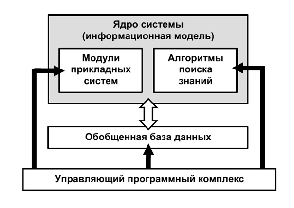

Введение
В деятельности современных компаний всё возрастающую роль играет информация. Однако необходимость учета при принятии управленческих решений большого количества экономических, политических, социальных, правовых факторов существенно усложняет процесс выбора правильного варианта решения. Как правило, это связано со сложностями, возникающими в процессе сбора актуальной, достоверной и полной информации по интересующему вопросу.
В общем виде, ИСППР (англ. Intelligent Decision Support System, IDSS) — это такая система, которая ассистирует ЛПР (Лицам, Принимающим Решения) в принятии этих самых решений, используя инструментарии дата майнинга, моделирования и визуализации, обладает дружелюбным (G)UI, устойчива по качеству, интерактивна и гибка по настройкам.
Стремительное увеличение объемов поступающей и перерабатываемой информации приводит к значительным изменениям в способах и методах анализа информации и требует не только автоматизации процесса обработки и изучения данных, но и интеллектуализации информационных и организационных процессов, построения и внедрения эффективных методов и интеллектуальных технологий поддержки принятия решений (ИСППР).
Интеллектуальная система поддержки принятия решений (IDSS) — это система поддержки принятия решений, которая широко использует методы искусственного интеллекта (ИИ). Использование методов ИИ в информационных системах управления имеет долгую историю. На самом деле, такие термины, как «системы, основанные на знаниях» (KBS) и «интеллектуальные системы» использовались с начала 1980-х годов для описания компонентов систем управления.
В целом, интеллект — это способность думать, понимать, принимать решения вместо того,чтобы делать что-то инстинктивно или автоматически. Основными идеями создания искусственного интеллекта являются изучение мыслительных процессов людей, представление и дублирование этих процессов с помощью машин (например, компьютеров, роботов) и исследование поведения с помощью машины, но выполняемое человеком. Создание и развитие искусственного интеллекта (ИИ) имеет своей целью заставить компьютеры делать вещи, которые сейчас делают люди, воспроизвести некоторые из интеллектуальных поведений в компьютерной системе.
История появления
Первые СППР (тогда еще без И) выросли из СПТ (Систем Процессинга Транзакций), в середине 60-х — начале 70-х. Тогда эти системы не обладали никакой интерактивностью, представляя собой, по сути, надстройки над РСУБД, с некоторым (совсем не большим) функционалом численного моделирования. Одной из первых систем можно назвать DYNAMO, разработанную в недрах MIT и представлявшую собой систему симуляции каких-либо процессов на основе исторических транзакций. После выхода на рынок мейнфреймов IBM 360 стали появляться и условно-коммерческие системы, применявшиеся в оборонке, спецслужбах и НИИ.
С начала 80-х уже можно говорить о формировании подклассов СППР, таких как MIS (Management Information System), EIS (Executive Information System), GDSS (Group Decision Support Systems), ODSS (Organization Decision Support Systems) и др. По сути, эти системы представляли собой фреймворки, спососбные работать с данными на различных уровнях иерархии (от индивидуального до общеорганизационного), а внутрь можно было внедрить какую угодно логику. Примером может служить разработанная Texas Instruments для United Airlines система GADS (Gate Assignment Display System), которая поодерживала принятие решений в Field Operations — назначение гейтов, определение оптимального времени стоянки и т.п.
В конце 80-х появились ПСППР (Продвинутые — Advanced), которые позволяли осуществлять «what-if» анализ и использовали более продвинутый инструментарий для моделирования.Наконец, с середины 90-х на свет стали появляться и ИСППР, в основе которых стали лежать инструменты статистики и машинного обучения, теории игр и прочего сложного моделирования.
За последние десятилетия информационные технологии достигли высокого уровня развития. В связи с этим большинство развивающихся компаний используют автоматизированные средства, позволяющие эффективно хранить, обрабатывать и распределять накопленные данные. Современные системы поддержки принятия решений (СППР) появились благодаря развитию управленческих информационных систем и систем управления базами данных (СУБД) и представляют собой системы, приспособленные к решению текущих задач, возникающих в управленческой деятельности. Это мощный инструмент, позволяющий помочь лицам, принимающим решения (ЛПР), решить сложные неструктурированные задачи.
Как правило, системы поддержки принятия решений являются результатом мультидисциплинарного исследования, которое включает в себя теории баз данных, методов имитационного моделирования, искусственного интеллекта, нейронных сетей, ситуационного анализа и интерактивных компьютерных систем. В настоящее время нет единого общепринятого определения СППР, т. к. строение системы напрямую зависит от тех задач, для решения которых она используется, а также от доступных знаний, данных и информации, на основе которых принимаются решения.
Для решения слабоструктурированных или неструктурированных управленческих задач, с которыми достаточно сложно справиться естественному интеллекту, возникает необходимость в создании и использовании систем искусственного интеллекта для принятия решений, т. е. интегрированных интеллектуальных систем управления, в состав основных компонентов которых включаются базы данных и знаний, блок решения и логического вывода, хранилище моделей и т.п. Создание подобных систем стало возможным благодаря развитию и достижениям интеллектуального управления, основанным на разработках в области искусственного интеллекта, инженерии знаний, обработки данных и математического моделирования.
Обобщенная архитектура
Функциональный анализ прикладных систем, основанных на знаниях, обычно осуществляется в рамках международного стандарта IDEFO. Такая методология позволяет представить формальную модель интегрированной системы интеллектуальной поддержки моделирования и визуализации в нотации стандарта IDEFO в виде следующей обобщенной структуры:
Классификации
Для того что существующие в настоящее время системы поддержки принятия решений могли смоделировать ППР, осуществляемый человеком, им необходимо придать свойства интеллектуальности, т.е. включить в их состав перечисленные выше подсистемы. Интеллектуальность СППР предполагает наличие в системе собственной внутренней модели мира. Данная модель обеспечивает самостоятельность системы при оценке задачи и принятии решения, индивидуальность в выводах, способность семантически интерпретировать входящий запрос в соответствии с собственной базой знаний, умение в кратчайшие сроки выработать ответ.
По области применения:
По соотношению данные\модели (методика Стивена Альтера):
По типу используемого инструментария:
Процесс принятия решений
Ранее принятие решений было чисто познавательным процессом, позволяющим выбрать наиболее приемлемый вариант действий из имеющихся альтернатив. Однако это было, когда системы поддержки принятия решений не существовало. В настоящее время процесс принятия решений широко поддерживается автоматизированными программными системами. Однако, если внимательно посмотреть на последовательность или этапы принятия решений, едва ли можно найти какое-либо отклонение.
Процесс принятия решений, на сегодняшний день, сложен, он поддерживается компьютеризированными системами и включает в себя следующие шаги:
- Определение проблемы. Это важный этап. Он предоставляет лицам, принимающим решения, базу, на которой они могут строить предположения, собирать и анализировать данные и оценивать альтернативы. Определение проблемы начинается с признания того, что проблема существует. Проблема существует, когда:
- есть разница между ожидаемым и доставленным;
- существует отклонение от обычного;
- предпринятые действия не оправданы.
- Определение лица, принимающего решения. В зависимости от характера проблемы, ее отправляют нужному человеку. Плохо структурированная проблема перейдет к высшему руководству, сложная проблема — менеджерам, а повторяющиеся будут отправлен работнику на более низком иерархическом уровне.
- Сбор информации. Как только проблема отправлена нужному человеку, заинтересованный человек может начать сбор данных и выявление факторов, влияющих на ситуацию. Без DSS сбор и анализ данных займет слишком много времени. DSS может обработать тонны данных всего за несколько секунд.
- Оценка альтернатив и решение. Эта стадия включает в себя анализ всех возможных направлений действий и определение наиболее подходящего из них путем оценки плюсов и минусов каждой альтернативы. DSS помогает в обосновании конкретного выбора.
- Внедрение и контроль. Как только решение принято, необходимо идти дальше. Реализация требует планирования. Мониторинг также важен для определения полезности конкретного решения для достижения целей. Это может потребовать некоторых корректировок или привести к новой проблеме. В последнем случае, возможно, придется повторить весь процесс.
Недостатки систем поддержки принятия решений
Системы поддержки принятия решений имеют ряд недостатков. Перечислим их.
Заключение
Практика, исследования и технологии DSS продолжают развиваться. В последние годы Интернет оказал значительное влияние на разнообразие, распространение и сложность DSS. Портативные ПК, беспроводные сети, расширение параллельной обработки, в сочетании с очень большими базами данных и средствами визуализации, продолжают стимулировать разработку инновационной поддержки принятия решений.
Во многих отношениях компьютеризированные системы поддержки принятия решений технологически сложны и являются очень необходимым инструментом в организациях. Исследования и разработки систем поддержки принятия решений будут и впредь использовать любые новые технологические решения и извлекать выгоду из прогресса в создании очень больших баз данных, искусственного интеллекта, взаимодействия человека с компьютером, моделирования и оптимизации, разработки программного обеспечения, телекоммуникаций. Из более фундаментальных исследований работа идет по таким темам поведения, как принятие организационных решений, планирование, теория поведенческих решений и организационное поведение.
Список литературы
- Ларичев, О. И. Системы поддержки принятия решений. Современное состояние и перспективы их развития [Электронный ресурс] / О. И. Ларичев, А. Б. Петровский // Итоги науки и техники. Сер. Техническая кибернетика. — Москва : ВИНИТИ, 1987.
- Каширина Е.А. Роль информационных технологий в достижении конкурентного преимущества [Электронный ресурс] / Электронное научное периодическое издание «Системное управление» – Выпуск 1 (30). – 2016. – Режим доступа: http://sisupr.mrsu.ru/2016-1/PDF/Kashirina(2)_2016-1.pdf
- Петерсон Дж. Теория сетей Петри и моделирование систем. – М.: Мир, 1984.
- Стадниченко С.Ю. Интеллектуальные системы поддержки принятия решения // Молодой ученый.